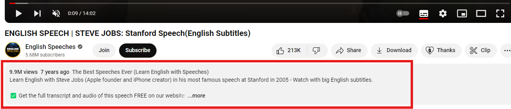

TubeWriter
TubeWriter is a simple extension that allows you to download or copy YouTube transcriptions to your clipboard with ease.
How to use this plugin
- Go to the YouTube video you want transcribed.
- Expand the video description by clicking the description box. 
- Scroll to the bottom to find the Transcript section.
- Click the "Show transcript" button.
- The full transcript will appear next to the video player.
- Click "Download transcript" or "Copy transcript".